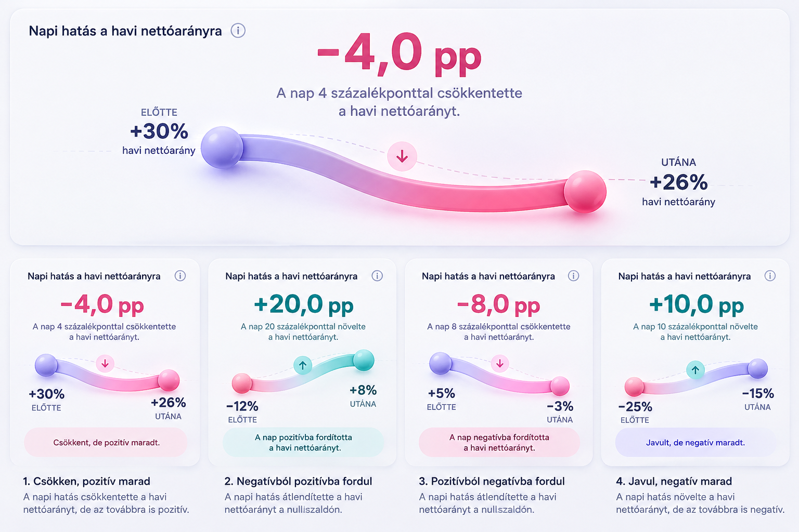

Balance Napi hatás V8 — vizuális ellenőrzés
Az eredeti PNG és a tényleges Flutter goldenek összevetése. Ez a fejlesztési nézet nem része az alkalmazásnak.
Implementációs terv
- A meglévő napi aggregátumból M…D−1 és M…D havi bevétel/kiadás. A mai nap kanonikus időpont-cutoffja érvényes; nincs 119 napos feltétel.
- Független immutable pénzügyi és vizuális állapotmodell. Teljes pontosságú delta százalékpontban, explicit hiányzó nevezők.
- Az enum végére kerülő negyedik avatar. Azonos felső magasság, megőrzött ikonméretek és anyag; módosított vízszintes kiosztás.
- A kis referencia-kártyák kompozícióját követő egyetlen dinamikus fővizuál. Zárt felületű clay szalag, kiemelés, mélység, árnyék, két gömb, irányjelző és státuszsáv.
- Unit, valódi Core-navigáció, mentés, reszponzív és golden ellenőrzés. A régi fővizuálok képpontjai a selector megengedett változásán kívül megmaradnak.
- Formázás/elemzés, commit/push, azonos SHA-jú normál human APK letöltése és SHA-256 ellenőrzése.
Kötelező referencia: napi.png

Flutter eredmények
A 23 korábbi Napi golden képpontkülönbsége kizárólag az avatarsor területére esik. A korábbi fővizuálok és a ritmuscsík változatlan.